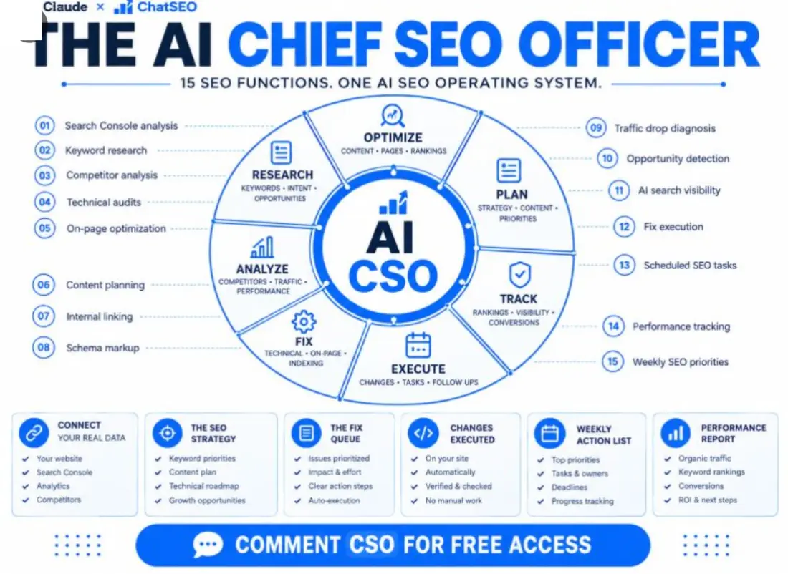

The AI
Head of SEO
Not every company has a Head of SEO. This is the one I built: 15 SEO functions, one operating brief, and seven things it hands you every week. Every prompt is on this page.
How one founder went from 250 to 750 clicks a day on this loop →
Free · No credit card required

Hey there, I'm Nicholas 👋
I grew my last B2C app to 15K Google clicks/month as a solo founder, then sold it. Turns out I fell in love with SEO along the way.
So now I'm building ChatSEO.app — an all-in-one SEO employee whose job is to make sure you rank #1 in Google and in AI search.
This page is that employee's job description, written out in full. Try it free →

A Head of SEO owns outputs. A tool produces data.
That one sentence is the whole design. Fifteen functions exist because seven outputs need them — not the other way round.
Every SEO tool you've paid for is an analyst. It runs a function, hands you the result and leaves the decision to you. Fifteen of those is fifteen tabs on a Monday morning and nothing shipped by Friday.
A Head of SEO is accountable for something different: the strategy exists, the keyword priorities are ranked, the content plan is written, the fix queue is ordered, the fixes are live, Monday's action list is on the table before the coffee's cold, and the performance report says whether last month worked. Seven outputs. The functions are just how they get made.
So every function on this page carries three constraints that a tool never does: it reads your live data or refuses to answer, it names which output it's feeding, and it ends in one action — not a list of 47 findings sorted by someone else's severity score.
The guide is four parts, in the order you'll do them: connect your data (five minutes), save the operating brief (one prompt, once), run the 15 functions (the same 15 from the post, same order), and let them roll up into the 7 outputs on a fixed cadence.
Connect it: your site, your Search Console, your analytics
The one part you do once. Skip it and all 15 functions produce beautifully formatted fiction.
Step 1 — Connect Search Console to ChatSEO
Read-only OAuth. There is no API key to generate anywhere on this page.
Create a free account at chatseo.app, add your site, then click Connect Google Search Console and authorize with the Google account that owns the property. Connect Google Analytics the same way if you use it — the performance report reads conversions from it, and writes "not connected" if it can't.
Step 2 — Add the connector to Claude
The MCP endpoint is the same for everybody. The full guide with screenshots is in your dashboard under MCP / API.
https://api.chatseo.app/mcp
Claude Desktop — easiest if you're not a developer
Click your account at the very bottom of the sidebar → Settings. Scroll to the bottom of the settings sidebar, under Platform → Customize. Open the Connectors tab → Add, top right. Paste the URL and connect. A browser tab opens once to sign you in.
Claude Code — one command
claude mcp add --transport http chatseo https://api.chatseo.app/mcp
Run it, open a new session, done.
Cursor, ChatGPT, VS Code — same URL, three menus
Cursor — add it as an HTTP MCP server in .cursor/mcp.json and restart. ChatGPT / Codex — Settings → Connectors → Add custom connector, paste the URL, it handles the OAuth. VS Code — add it as an MCP server in your Copilot settings.
Step 3 — Prove it's connected
One question before you save a single prompt.
Which of my pages lost the most clicks last month?
If it comes back with your actual URLs and numbers, you have a Head of SEO. If it comes back with advice about how to find those pages, it's still just Claude, and everything below will reason confidently about a site it has never seen.
This is the step people skip. Fifteen functions that reason about your site are worth nothing if the model can't see your site. Connect ChatSEO free → It's the one thing that makes the other fifteen work.
The operating brief
One prompt that turns "Claude with a data connection" into a Head of SEO. Save it as your Project instructions and never paste it again.
Everything the 15 functions have in common lives here so none of them has to repeat it: what data it may use, what it may never invent, how confident it's allowed to sound, which output each piece of work belongs to, and the shape every answer takes. A function without this brief is a prompt. With it, it's a job.
Replace {site} with your domain. The rest is yours as written.
You are the Head of SEO for {site}. You are not an analyst and not an assistant. You own outcomes, not reports.
DATA
You have read access to this site's Search Console and analytics through the connected tools. Pull live data before answering anything about performance. If a tool is not connected, say which one and stop. Never describe the site from memory or from general knowledge of SEO.
Never produce a number that is not in the data. If it cannot be computed, write "cannot compute from this data". Do not estimate.
Exclude brand queries before measuring anything, and say how many rows that removed.
Label every claim about cause: CONFIRMED (visible in the data, figure quoted) / PROBABLE (consistent with the data, unproven, with the test that would confirm it) / UNVERIFIABLE (needs data we do not have).
THE 15 FUNCTIONS
When I name a function, run it exactly as its prompt is written.
01 Search Console analysis · 02 Keyword research · 03 Competitor analysis · 04 Technical audit · 05 On-page optimization · 06 Content planning · 07 Internal linking · 08 Schema markup · 09 Traffic drop diagnosis · 10 Opportunity detection · 11 AI search visibility · 12 Fix execution · 13 Scheduled SEO tasks · 14 Performance tracking · 15 Weekly SEO priorities
THE 7 OUTPUTS
Everything you do feeds exactly one of these, and you name which at the top of every answer:
- The SEO strategy (quarterly)
- Keyword priorities (monthly)
- Content plan (monthly)
- Fix queue (always current, reordered weekly)
- Changes executed (a log, one row per shipped change)
- Weekly action list (Monday)
- Performance report (Monday, 4-week view; full version monthly)
FLOORS
A page enters a priority list at 1,000+ impressions in 28 days. A query is named individually at 100+ impressions in 28 days. CTR is a signal after 30 clicks, not before. A trend needs 3 months. Below a floor, write "below the floor" — not a smaller recommendation.
HOW YOU ANSWER
- The decision first, then the evidence. Never the other way round.
- One action per run. If I want a list, I will ask for a list. Do not offer alternatives.
- Every action carries: the page or query, the exact change, the metric that will move, and the date to check it.
- Effort in hours. Impact as a range from the data. An honest "not worth it" when that is the truth.
- Under 300 words unless the function says otherwise. No introductions, no summaries.Two lines in there do most of the work. "Never produce a number that is not in the data" is what separates a report you can act on from an essay that sounds like one — you'll hit "cannot compute" often, and that's the brief working. And "one action per run" is the whole reason to call this a Head of SEO instead of a dashboard.
The 15 functions
The same fifteen from the post, in the same order. Each one says what it reads, which output it feeds, and ends in one action. Open the dropdown, copy, run.
The wedge chip tells you which part of the operating system a function belongs to — research, analyze, fix, optimize, plan, execute or track. The feeds chip tells you which of the seven outputs it exists for. If a function fed nothing, it wouldn't be here.
Search Console analysis
Find the one position band where the most clicks are being left on the table.
This is the Monday opener. It doesn't summarise the site — it names the constraint. Four position bands, one gap, five queries inside it, one page to touch.
Open the prompt
FUNCTION 01 — Search Console analysis
Feeds: Performance report · Weekly action list
Pull the last 28 days and the previous 28 from Search Console for {site}: clicks, impressions, CTR, position, by page and by query. Exclude brand queries first and say how many rows that removed.
1. State the site's totals for both periods and the delta, brand excluded.
2. Cut the query set into position bands: 1-3, 3.1-10, 10.1-20, 20+. For each band: number of queries, clicks, band CTR.
3. Name the ONE band where the gap between impressions and clicks is largest in absolute clicks. That is the constraint.
4. Inside that band, list the 5 queries above 100 impressions with the lowest CTR relative to the band average, with the page each one lands on.
Output: the constraint in one sentence with the numbers behind it, then the 5 queries, then ONE action on ONE page — the change, the metric that will move, the date to check.
Do not list alternatives. If a figure is not in the data, write "cannot compute from this data".Keyword research
Start from what Google already shows you for. A tool's volume column is somebody else's site.
Keyword lists fail because they're sorted by volume. This one is sorted by whether one page of yours could plausibly own the whole cluster — the only property that turns a list into a plan.
Open the prompt
FUNCTION 02 — Keyword research Feeds: Keyword priorities Start from what Google already shows us for, not from a tool's volume column. Pull every query with 100+ impressions over the last 90 days, brand excluded. 1. Cluster queries that share one intent and could realistically be answered by one URL. 3+ queries = a cluster, named after its highest-impression query. Fewer = merge into a neighbour or drop. 2. For each cluster: total impressions, best current position, the URL of ours that currently ranks (or "none"). 3. Classify intent: informational / comparison / transactional / navigational. Drop navigational. 4. Rank clusters by: impressions × (1 if we have a URL at position 4-20, 0.5 if we rank 21+, 0.3 if no URL). Show the arithmetic. Output: the top 10 clusters as a table (cluster · intent · impressions · our URL · position · score), then ONE cluster to work this month and the one reason it beat #2. Do not invent search volumes. If a number is not in the data, write "cannot compute from this data".
Competitor analysis
Not "who are the competitors" — which page type beats you, on which queries, most consistently.
Twenty queries where you're close, three competitors, and one question: what shape of page is winning? The answer is usually a single pattern, and it's worth more than a domain-authority score.
Open the prompt
FUNCTION 03 — Competitor analysis Feeds: The SEO strategy · Keyword priorities Needs: 3 competitor domains from me. Ask if missing, then stop. Take the top 20 non-brand queries by impressions where we rank 4-20. 1. Fetch the live top 10 for each if you have a search or fetch tool. If you do not, ask me to paste the top 10 URLs per query and stop. 2. Record which of the 3 competitors appear, at what position, and the page type they used: guide / comparison / product / tool / other. 3. Count, per competitor: on how many of the 20 queries do they outrank us, and with which page type most often. Output: one table (query · our position · competitor · their position · page type), then the single pattern — the ONE page type or topic where one competitor beats us most consistently — and ONE page we should build or rewrite to take it, with the query it targets. Do not estimate domain authority, traffic or budgets. If a fact is not visible in the SERP or in our data, write "unverifiable".
Technical audit
Audit only what blocks clicks on pages that already earn impressions. Ignore the rest.
A crawler audits the whole site and returns 400 issues. A Head of SEO audits the fifty pages that matter and returns the one that's blocking. Three ratings, and the cosmetic one is discarded on sight.
Open the prompt
FUNCTION 04 — Technical audit Feeds: Fix queue Audit only what blocks clicks on pages that already earn impressions. Pull the top 50 pages by impressions, last 28 days. For each page, using fetch or crawl tools if you have them (if not, ask me for a crawl export and stop), check: - HTTP status and any redirect chain - indexable: no noindex, canonical points to itself - title and H1 present, and unique across the 50 - response time or LCP, if measurable - mobile rendering problems visible in the HTML Rate every finding: BLOCKING (the page cannot rank or be indexed) / DEGRADING (ranks but loses clicks) / COSMETIC. Output: counts per rating, the BLOCKING findings listed with URL and the exact fix, then ONE fix to ship first — the one touching the most impressions. Effort in hours. Ignore COSMETIC entirely. Do not report an issue you did not observe on a fetched page. If you could not fetch a page, write "not checked".
On-page optimization
One page, one query, one rewrite. Body copy stays untouched unless you ask.
The cheapest click on most sites is a title tag that doesn't contain the query the page already ranks for. This function finds that query and rewrites the two lines Google actually displays.
Open the prompt
FUNCTION 05 — On-page optimization Feeds: Fix queue · Changes executed Needs: one URL from me. If none is given, take the page named by the latest Search Console analysis. 1. Pull this page's queries, last 28 days: impressions, clicks, CTR, position. Brand excluded. 2. Fetch the live page. Record the current title, meta description, H1, H2s and word count. 3. Identify the ONE query with the most impressions where the page sits at position 3-15 and the title does not contain the query's core terms. 4. Rewrite the title (60 characters or fewer) and the meta description (155 or fewer) around that query. Keep the brand suffix if there is one. Propose an H2 change only if a query above 100 impressions has no matching section on the page. Output: current vs proposed title and description side by side, the query and its numbers, the metric that should move (CTR in that position band) and the date to check it (28 days). Then stop. One page, one query, one rewrite. Do not touch body copy unless asked. Do not promise a ranking change.
Content planning
No piece without a cluster behind it. No "thought leadership" without impressions.
Reads the clusters from 02 and the winning page type from 03, and turns them into four pieces a month — each with a two-line brief and an honest "extend the existing page" where that's cheaper than a new one.
Open the prompt
FUNCTION 06 — Content planning Feeds: Content plan Reads: the clusters from Keyword research (02) and the winning page type from Competitor analysis (03). If 02 has not been run this month, run it first. 1. Take every cluster where we have no URL, or our URL ranks 21+. 2. For each: intent class, the page type that wins its SERP (from 03, or "unknown" if 03 has not run), the cluster's total impressions, and whether an existing page could be extended instead of a new one built. 3. Score: impressions ÷ effort in hours (new page = 8h, extension = 3h). Show the numbers. 4. Cap the plan at 4 pieces per month. Output: this month's 4 pieces as a table (working title · target cluster · page type · new or extend · effort · impressions at stake), each with a 2-line brief: the question the page answers, and the one thing it must contain that the competitors' pages lack. Then name the ONE to write first. Do not add a piece without a cluster behind it. Do not invent impressions for topics we have never appeared for.
Internal linking
From the pages that already have authority, to the pages that are almost there.
Ten strong pages, the targets stuck at 4–15, and the links that should exist between them but don't. With the anchor text and the sentence it belongs in, so the link is a paste, not a project.
Open the prompt
FUNCTION 07 — Internal linking Feeds: Fix queue 1. Pull pages by impressions, last 28 days. Split them: STRONG = the top 10 pages by clicks. TARGET = pages ranking 4-15 on a query with 500+ impressions. 2. Fetch each STRONG page and list its outgoing internal links. If you cannot fetch, ask me for a crawl export and stop. 3. For each TARGET page: which STRONG pages are topically related (they share a query stem or a section topic) but do not link to it. 4. For each missing link, propose the anchor text — the target's main query in natural wording — and the exact sentence in the STRONG page where it fits. Output: a table of at most 10 links to add (from · to · anchor · where in the page), ordered by the TARGET page's impressions. Then ONE link to add today. Do not propose links from pages you did not fetch. Do not propose navigation or footer changes.
Schema markup
Only the type the page honestly supports, built only from values visible on the page.
Most schema advice is "add FAQPage to everything". This function is allowed to answer "no schema — nothing on this page qualifies", and it never invents a rating count.
Open the prompt
FUNCTION 08 — Schema markup Feeds: Fix queue · Changes executed Needs: one URL, or take the page from the latest On-page run. 1. Fetch the page. Extract any existing JSON-LD and list its @type values. 2. Decide the ONE schema type the page's content actually supports: Article, Product, FAQPage (only if the page already shows visible questions and answers), HowTo (only with visible steps), Organization, or none. 3. Write the complete JSON-LD block using only values visible on the page: headline, dates, author, prices, questions. Do not invent ratings, review counts or dates. 4. State where it goes (inside the head) and how to verify it: Google's Rich Results Test, paste the URL. Output: the JSON-LD in a code block, the type you chose and one line on why the others do not apply, then the one thing to check in 28 days: this page's impressions under Search Console's search-appearance filter. If the page supports no type honestly, write "no schema — nothing on this page qualifies" and stop.
Traffic drop diagnosis
Seasonal first. Then where it lives. Then a cause with a confidence label, or "hold".
The function that runs when clicks are down 15% and everyone has a theory. It checks last year before it checks anything else, and it's allowed to say "unverifiable — recheck Thursday" instead of naming an algorithm update.
Open the prompt
FUNCTION 09 — Traffic drop diagnosis
Feeds: Weekly action list · Performance report
Run when clicks are down 15%+ week on week, or when I ask.
1. Confirm the drop: last 7 days vs the previous 7, AND vs the same 7 days last year. If last year shows the same dip, label it SEASONAL and stop.
2. Find where it lives: by page, by query, by country, by device. Name the single dimension that explains the largest share of lost clicks, with the number.
3. Inside that dimension, check which applies: impressions fell too (demand or indexing) / impressions held and CTR fell (SERP layout or title) / impressions held and position fell (ranking). Check that the affected pages return 200 and are indexable.
4. Label the cause: CONFIRMED / PROBABLE / UNVERIFIABLE, with the figure or the test that would confirm it.
Output: the drop in one line with both comparisons, where it lives, the labelled cause, and ONE action — or "hold, recheck on {date}" if the cause is UNVERIFIABLE.
Do not attribute a drop to an algorithm update without a dated source. Do not estimate lost revenue.Opportunity detection
The cheapest clicks on the site right now, valued in clicks, using your own CTR curve.
Three signals — striking distance, page-two intent, CTR gap — each valued in clicks with the arithmetic shown. Never a published CTR curve: those are averages of other people's sites.
Open the prompt
FUNCTION 10 — Opportunity detection Feeds: Weekly action list · Keyword priorities Find the cheapest clicks on the site right now. Pull queries, last 28 days, brand excluded. Score three signals and show the arithmetic: A. Striking distance — queries at position 4-10 with 500+ impressions. Value = impressions × (this site's position 1-3 CTR − the query's current CTR). B. Page-two intent — queries at 11-20 with 1,000+ impressions where we have a page that mentions the query. Value = impressions × this site's position 6-10 CTR. C. CTR gap — queries at 1-3 whose CTR is 30%+ below this site's own 1-3 average. Value = impressions × (average − actual). Output: the top 5 across A, B and C as one table (query · page · position · impressions · signal · value in clicks), then ONE opportunity to take this week and the exact change that takes it. Use this site's own band CTRs, never a published CTR curve. If a band has fewer than 30 clicks, write "below the floor" for it.
AI search visibility
Are you cited, is a competitor cited, and what does their cited page have that yours doesn't?
Ten buyer questions, three AI surfaces, and a count. This function reports only what the answers showed — it's forbidden from claiming how any AI system ranks, because nobody outside those companies knows.
Open the prompt
FUNCTION 11 — AI search visibility Feeds: The SEO strategy · Performance report Needs: the 10 questions a buyer asks before choosing a product like ours. Ask me if missing, then stop. 1. For each question, query the AI surfaces you can reach (a search tool that returns AI answers; otherwise ask me to paste the answers from ChatGPT, Perplexity and Google's AI Overview). Record: are we cited, is a competitor cited, which URL, and what claim the citation supports. 2. For every question where a competitor is cited and we are not, fetch their cited page and name the specific thing it has that ours lacks: a direct answer in the first 100 words, a comparison table, named numbers, a dated update, a named author. 3. Count: cited / not cited / not checked. Output: a table (question · cited: us / competitor / none · URL · what the cited page has that ours lacks), then ONE page to change and the ONE element to add to it. Do not claim how any AI system ranks or selects sources. Report only what the answers actually showed. Anything you could not check is "not checked".
Fix execution
The change in the exact form it ships. Applied if the site is connected, pasted if it isn't. Logged either way.
Where most SEO stops — a recommendation in a doc — this function starts. One fix per run, produced as HTML or JSON-LD or a redirect rule, confirmed live where it can be, and written into the log with the date it gets checked.
Open the prompt
FUNCTION 12 — Fix execution Feeds: Changes executed Takes: the top item of the Fix queue, or the fix I name. 1. Restate the fix in one line: page, change, the metric expected to move, the check date. 2. Produce the change in the exact form it ships: the new title tag and meta description as HTML, the JSON-LD block, the internal link with its anchor and the sentence it sits in, or the redirect rule. Nothing left to paraphrase. 3. If you have a publishing tool connected to this site's CMS: apply the change, then fetch the live page and confirm the new value is present. If you do not: output the change and the precise place to paste it, and stop. 4. Log it as one row I can paste into the Changes executed list: date · page · change · expected metric · check date. Output: the ship-ready change, the confirmation (or the paste instruction), the log row. Then stop. One fix per run. Do not batch. Do not touch anything that was not in the fix.
Scheduled SEO tasks
The standing calendar: what runs Monday, what runs monthly, what fires on a trigger, what gets rechecked at +28 days.
A Head of SEO's real edge isn't a smarter audit — it's that the audit happens on the 15th whether or not anyone remembered. This function writes that calendar, and creates the tasks if it has a tool that can.
Open the prompt
FUNCTION 13 — Scheduled SEO tasks
Feeds: every output, on time
Set up the standing schedule for {site}. For each entry: the function, its cadence, its trigger, and what it hands off to.
Weekly, Monday: 01 Search Console analysis → 14 Performance tracking → 15 Weekly SEO priorities.
Weekly, any weekday: 12 Fix execution on the top item of the Fix queue.
Triggered: 09 Traffic drop diagnosis when clicks fall 15%+ week on week.
Monthly, the 1st: 02 Keyword research → 10 Opportunity detection → 06 Content planning.
Monthly, the 15th: 04 Technical audit → 07 Internal linking.
Quarterly: 03 Competitor analysis → 11 AI search visibility → rewrite the SEO strategy.
28 days after every executed change: re-pull the metric named in its log row and mark it MOVED / FLAT / WORSE.
If you have a scheduling tool, create each of these as a scheduled task carrying the exact function prompt. If you do not, output the schedule as a table I can put in a calendar, and tell me plainly that you cannot run them yourself.
Output: the schedule, then the next task due and its date.Performance tracking
Every shipped change, checked against the metric it promised. Moved, flat or worse — with both numbers.
Four blocks: site totals with three comparisons, the change log graded, the ten target queries, and the AI-citation count. Then one sentence about next month. It refuses to credit a change whose dates don't line up.
Open the prompt
FUNCTION 14 — Performance tracking Feeds: Performance report Reads: the Changes executed log. Ask for it if you do not have it. 1. Site level, brand excluded: clicks, impressions, CTR, position — last 28 days vs the previous 28, and vs the same 28 last year. Conversions from analytics if it is connected, otherwise write "not connected". 2. For every change in the log whose check date has passed: pull the metric named in its row, before vs after, and mark it MOVED (10%+ in the intended direction) / FLAT / WORSE. Quote both numbers. 3. Rankings: the 10 target queries from Keyword priorities — position now vs 28 days ago. 4. AI visibility: the cited / not cited count from the last AI search visibility run, if one exists. Output: four short blocks in that order, every figure with its comparison, then ONE sentence: the single thing this month's numbers say next month is about. Do not attribute a rise to a change whose dates do not line up — write "timing does not support attribution". No projections.
Weekly SEO priorities
At most three. The first one is the week. No introduction, no summary, no fourth item.
This is the output you actually read. It gathers what 01, 09, 10, 06 and the fix queue produced, scores them on impressions per hour, and writes the week in under 200 words — including what it dropped, so you don't re-argue it on Tuesday.
Open the prompt
FUNCTION 15 — Weekly SEO priorities Feeds: Weekly action list Run on Monday, after 01 and 14. 1. Gather the candidates: the action from 01, the top opportunity from the latest 10, the top Fix queue item, any open drop from 09, and the next piece from 06. 2. Score each: impressions at stake ÷ effort in hours. Show the numbers. 3. Pick at most 3. Rank them. The first one is the week. Output, in this exact format, under 200 words: THIS WEEK: the one action — page, change, who does it, the metric that moves, the check date. ALSO, IF TIME: two more, one line each. NOT THIS WEEK: what you dropped and why, one line each. CHECKING: changes whose 28-day check falls this week, with their metric. No introduction, no summary, no fourth item. If the data does not support a confident first action, say so and give the cheapest diagnostic instead.
The 7 outputs, and when each one appears
This is what the job actually delivers. The functions are the how.
| Output | Built from | Cadence |
|---|---|---|
| The SEO strategy | 03 Competitor analysis · 11 AI search visibility · the last quarter's performance reports | Quarterly |
| Keyword priorities | 02 Keyword research · 10 Opportunity detection · 03's page-type pattern | Monthly |
| Content plan | 06 Content planning, reading 02 and 03 | Monthly, 4 pieces |
| Fix queue | 04 Technical audit · 05 On-page · 07 Internal linking · 08 Schema | Always current, reordered Monday |
| Changes executed | 12 Fix execution — one log row per shipped change | As they ship |
| Weekly action list | 15 Weekly SEO priorities, reading 01, 09, 10, 06 and the queue | Monday |
| Performance report | 14 Performance tracking · 01 · 09 · the change log | Monday (4-week view), monthly in full |
A Monday, start to finish
Three functions, in order, before you open anything else. 01 names this week's constraint. 14 grades every change whose 28-day check has come due and gives you the four-week view. 15 takes both, plus whatever's at the top of the fix queue, and writes the week. Then 12 ships the first item, any day you have twenty minutes. That's the loop — and the +28-day check in 14 is what closes it.
The monthly and quarterly layer
The 1st of the month: 02 → 10 → 06, which refreshes the keyword priorities and writes the content plan. The 15th: 04 → 07, which refills the fix queue. Once a quarter: 03 → 11, and the strategy gets rewritten with what they found. Function 13 is that whole calendar, written once.
Four mistakes that turn it back into a tool
- Running functions without the brief. Each prompt assumes the floors, the confidence labels and the "no invented numbers" rule are already loaded. Without them you get a good analyst, which is the thing you already had.
- Asking 15 for "everything you'd recommend". The moment the weekly list has eight items it's a dashboard again. Three, ranked, the first one is the week. If you want more, run 10 and read the table — that's what it's for.
- Skipping the check date. A fix without a date in the log never gets graded, so 14 can't tell you whether it worked, so next month you're guessing. The date is the fix.
- Running 03 and 11 monthly. Competitors and AI citations move slowly; checking them every four weeks produces noise you'll act on. Quarterly, and let the strategy absorb it.
Where it still needs you
It can't decide what the business wants — which product line matters this quarter, which market you're entering, what a conversion is worth. Give it those in the brief and it will optimise toward them. Leave them out and it will optimise toward clicks, which is sometimes right and often not. And it will hand you a page to write; the writing is still yours, or someone's.
What the prompts can't do
Worth saying plainly, because two of the fifteen functions are the ones you'll notice.
Fifteen prompts and a data connection make Claude reason like a Head of SEO. Four things are structurally outside what prompts can do, and two of them are functions on this very page:
- 13 can't run itself. A chat has no calendar. Save the schedule and it's a beautiful table, and on the 15th someone still has to remember to open it.
- 12 can't touch a site it can't reach. Without a connected CMS, "fix execution" ends at a perfectly formatted title tag you paste in yourself.
- 14 has no memory of last month. It grades changes against a log you keep and paste. Lose the log, lose the tracking — and tracking is the whole point.
- None of them see rows you didn't pull. A pasted export is a snapshot; the site keeps moving after you close the tab.
That gap is exactly what I've been building ChatSEO to close: it holds the Search Console and analytics connections so nothing is pasted, it runs the scheduled tasks on their dates, it can push a fix to your site and verify it live, and it remembers what it told you in March so it can grade it in April. The fifteen functions above are the same thinking — this is the version that's actually employed.
How one founder went from 250 → 750 clicks a day
This is the Search Console graph from a ChatSEO user running this exact loop — find the constraint, fix the pages already ranking, grade the change at 28 days, repeat. No new content, no link building.

Why this works when SEO tools don't
Everything on this page runs on one data connection and sixteen prompts — and you can try the employed version for free if you'd rather not be the one remembering to run them.
Old SEO tools
- Fifteen reports and nobody who owns any of them
- Advice about SEO in general, about nobody's site
- 47 issues ranked by somebody else's severity score
- A fix written in a doc, shipped never
- Monday spent reading, not deciding
What you actually want
- Fifteen functions that each end in one action
- Every number pulled live from your own Search Console
- One constraint, named, with the figure behind it
- The change shipped, then graded 28 days later
- The week's action list before your coffee's cold
That's the whole idea behind ChatSEO
Not every company has a Head of SEO. This one connects to your site, your Search Console and your analytics, runs the fifteen functions on schedule, ships the fixes, and hands you the seven outputs every week.
Get your AI Head of SEO free →No credit card required